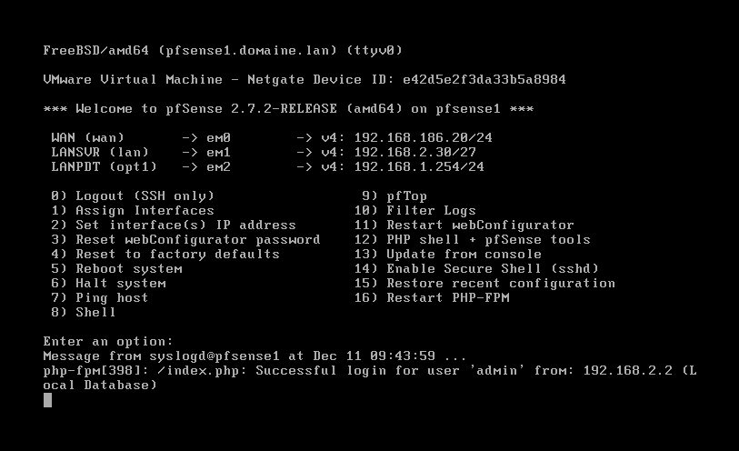
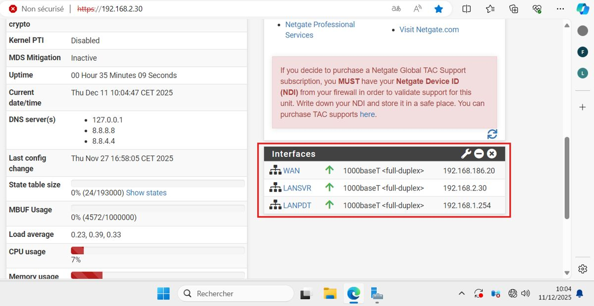

Étape 1 sur 5
Architecture et plan d'adressage
Deux réseaux privés VMware séparés par un pare-feu pfSense.
Objectif
Mettre en place deux réseaux privés sous VMware : SW-SVR, relié à un serveur DC1 (DNS, DHCP et IIS), et SW-PDT, relié à un poste de travail (PDT), puis filtrer les flux avec un pare-feu pfSense (règles, alias et règle horaire).
Plan d'adressage
| Équipement | Interface | Adresse IP | Masque | Passerelle |
|---|---|---|---|---|
| Pare-feu | WAN (eth0) | Fournie par le FAI | ||
| Pare-feu | LAN serveurs (eth1) | 192.168.2.30 | 255.255.255.224 | |
| Pare-feu | LAN postes (eth2) | 192.168.1.254 | 255.255.255.0 | |
| DC1 | Carte réseau | 192.168.2.2 | 255.255.255.224 | 192.168.2.30 |
| PDT | Carte réseau | DHCP (192.168.1.0/24) | 255.255.255.0 | 192.168.1.254 |
Configuration des interfaces
Trois interfaces : WAN, LANSVR (réseau serveur) et LANPDT (réseau du poste). La console de pfSense et l'interface web confirment leur état.
Captures



Savoir-faire mobilisés
- Plan d'adressage
- Virtualisation VMware
- Pare-feu